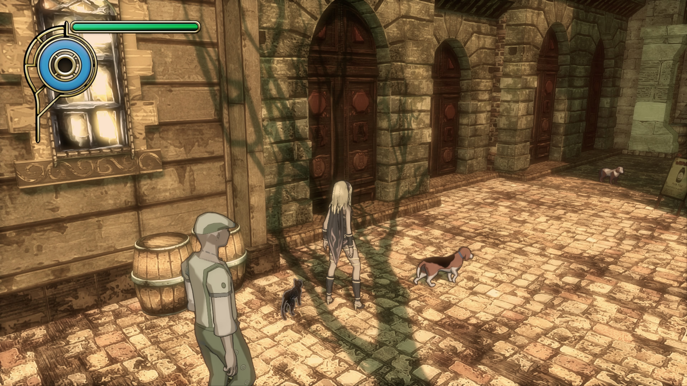
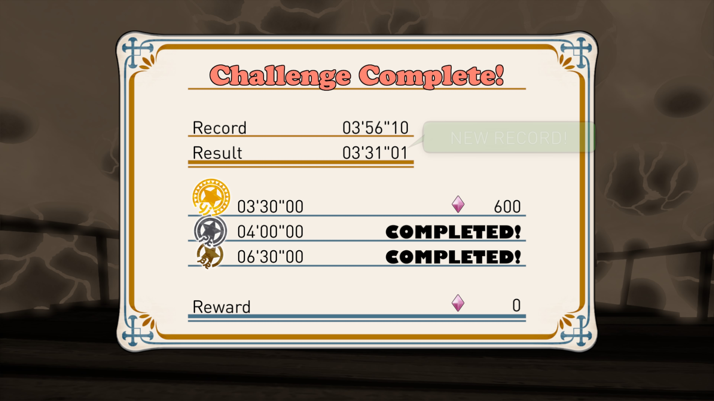
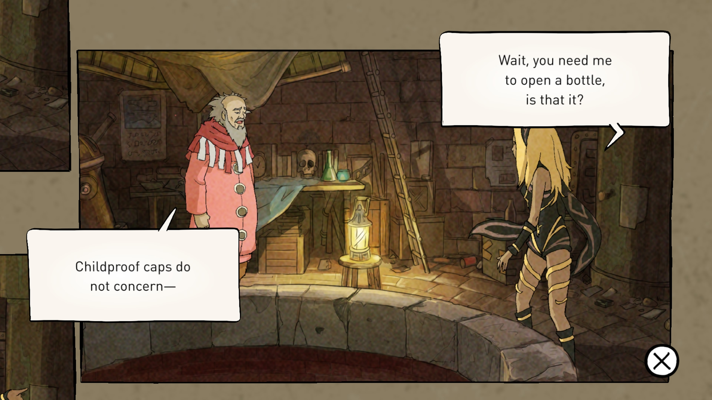

1game1week - Week 36 (9/3/25) - Gravity Rush Remastered
Hey all! It's week 36! (9/3 -> 9/10)
I'm a bit nervous... I really need to get some more games finished up, because I'm actually going to be out of town for work training during Week 39. It'll be a bootcamp-style weeklong thing (and some activities after that), so I definitely won't have time to play. And playing in the airport just seems off.
Please wish me luck. I might be screwed, lol.
As a quick blurb, I actually started playing today's game because I got mad at Atelier Sophie, which I was playing. Unfortunately, 4 hours after I last saved, the game decided to softlock during a fight. No amount of controller inputs worked, no amount of waiting worked, so I just had to bite the bullet and hoped the game had autosave.
It didn't.
Well... I guess that's just how it is. I lost four hours of progress, so I just said "screw it!" and played something else.
Anyways!
New games from 8/27 -> 9/2:
None! (Total 12)
Currently, my backlog is at +10 (lower is better, -2 from last week).
And onto 1g1w. Once again, a game is considered "beaten" if I've accomplished the main objective of the game.
GAME: Gravity Rush Remastered
PLATFORM: PlayStation 4 (played on PlayStation 5)
GENRE: Action
STARTED ON: 8/24
BEATEN ON: 8/28
TOTAL PLAYTIME: 13 hours and 34 minutes (tracked via in game timer)
Even though I started this game because I was mad at Atelier Sophie, I really enjoyed my time. I'm decently near to getting the Platinum trophy, just missing a decently lengthy sidequest.
I do have a few complaints... visual weren't the best, but I get the feeling it was because the game was being double scaled. We're scaling both models and 2D assets from Vita to PS4, AND THEN scaling from PS4 1080p to PS5 4K. It's not like it looked bad, just... off, somehow.
For a good chunk of the game, the action element revolves around shifting gravity and doing a Gravity Kick. The problem is the targeting system would occasionally just... not care where you're aiming. If there's an enemy you're trying to hit, and the Gravity Kick is aimed right at them, sometimes the game will just say "too bad" and either go past them, or just not hit.
If you're fighting, say, a flying enemy, you just "have" to put up with the targeting system and be patient for whenever it actually decides to hit. I'm unsure if it's an issue of the Gravity Kick hitbox not being large enough, the enemy's "weak point" hurt box not being large enough, or maybe even a skill issue! Maybe I didn't read the instructions better.
Also, sometimes gravity shifts are a little disorienting, but maybe I'm just getting old...

With that said... that's really all my complaints. Gravity Rush really is a fun game.
Something I especially enjoyed were the challenges. They varied from challenge to challenge, but the few basic ones involved combat or races.
Combat challenges, in particular, made for a really good tutorial of the battle system. A good chunk of them were, essentially, beat as many enemies as you can within an allotted time. If you beat X amount, you get a time extension.
Obviously, it just forces you to try to be optimal and move as fast as you can, or use your abilities to their full potential. Either that, or restricting which abilities you can do. For example, right after being told "you can grab / levitate / throw items", you get a challenge to beat enemies within an allotted time, using only thrown items.
Same with the race challenges. You end up trying to optimize times, finding shortcuts, making sure you can schmove...
All challenges had a bronze, silver, and gold medal attached to them with time / point thresholds. As I mentioned before, I nearly platinum'd the game, so I got all gold medals.
Speaking of restricting your abilities, one of the dungeon areas (Rift Planes) had a cool gimmick where shifting gravity was severely limited because Dusty, the cat that grants Kat her gravity powers, ate some poison that was haphazardly left on the sidewalk before entering the Rift Plane.
It's weird to describe it this way, but it reminded me of those challenge areas in Super Mario Sunshine where Fludd would be taken away. I mean, I guess halfway. In those, you mostly rely on movement. Here, you're really just platforming. I guess the similarity more so comes from the level removing a core aspect of gameplay and letting you go through it.

The story was interesting, but wasn't necessarily the biggest thing to write home about. Writing was well done, and a bunch of characters left me wanting more of them. Even if I didn't spend that long with them, I ended up really rooting for some of them. Kat and Raven are really easy examples.
I think the presentation, with "cutscenes" being styled after something akin to an interactive comic was superb. A bunch of dialogue is mostly text boxes, still. There was some voice acting, the characters spoke a fictional language (simlish, gibberish, etc). It was charming.
My only real gripe with the story is that it just doesn't wrap up. It leaves a lot of threads open. While it culminates in a final boss, and resolving a few conflicts, the conclusion mostly leaves a bunch of other stuff unresolved and says, "welp, go buy Gravity Rush 2".
It's not all bad... I'm probably going to buy it at some point, because I really enjoyed this game.

I forgot to take a picture of the game case and I'm not at my apt to do so and I need to upload this orz
Thanks for reading! If you need to contact me for any reason, please feel free to email me at aru@hoshikawa-aru.com.